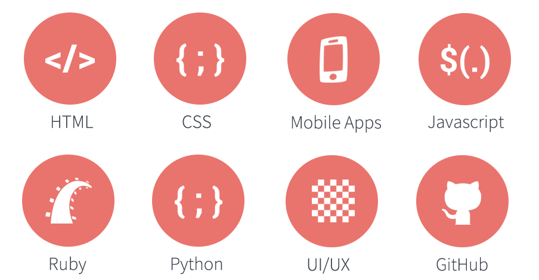

Tech Diversified is nonprofit software development school in Seattle, Washington. Our mission is to reach out to and expose underrepresented communities to career opportunities in the tech industry. Our goal is to build a more diverse workforce by way of inspiring people of color that may not have previous coding experience or computer science education and demonstrating through a multifaceted approach of support - that a career in tech in possible.
Get Involved
Tech Diversified is a 501 (c) (3) candidate. We are currently awaiting our formal nonprofit approval status
Volunteer
For Companies
Tech Diversified is a Seattle-based nonprofit program aimed at improving representation in the tech industry for people of color. We provide adults (18+) with free resources such as technical workshops, career counseling, one-on-one mentoring and networking meet-ups.
Tech Diversified is a quarterly software developer and web design-training program. Classes will be held once (maybe twice) a week for approximately 16 weeks. The program will combine evening in-classroom instruction, hands-on projects, mentorship, guest lecturers, and career counseling. At the end of quarter, students will have real-world insight and exposure to the possibilities in software development and web design
Workshops focus on topics such as:

Tech Diversified is a Seattle-based nonprofit program aimed at improving representation in the tech industry for people of color. We provide adults (18+) with free resources such as technical workshops, career counseling, one-on-one mentoring and networking meet-ups.
Tech Diversified is a quarterly software developer and web design-training program. Classes will be held once (maybe twice) a week for approximately 16 weeks. The program will combine evening in-classroom instruction, hands-on projects, mentorship, guest lecturers, and career counseling. At the end of quarter, students will have real-world insight and exposure to the possibilities in software development and web design
Workshops focus on topics such as:
Tech Diversified is nonprofit software development school in Seattle, Washington. Our mission is to reach out to and expose underrepresented communities to career opportunities in the tech industry. Our goal is to build a more diverse workforce by way of inspiring people of color that may not have previous coding experience or computer science education and demonstrating through a multifaceted approach of support - that a career in tech in possible.